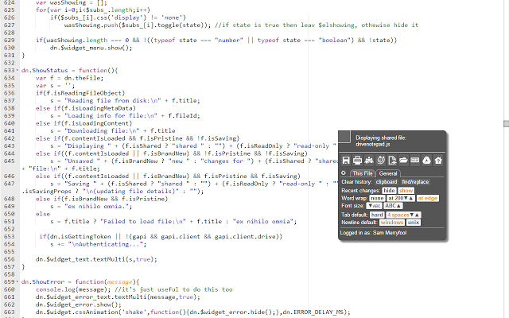
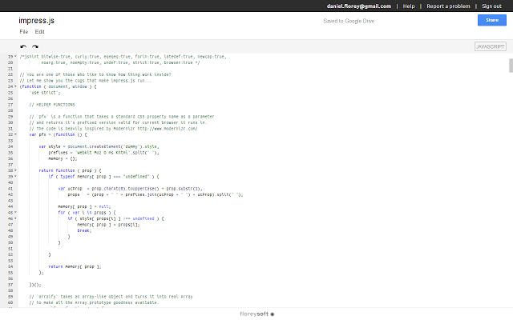
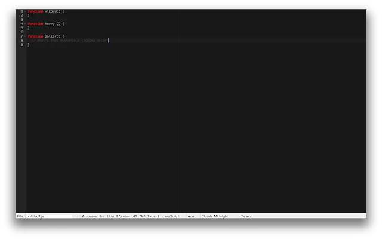

Comparing Google Drive Code Editors
Introduction
In this article, I will be comparing several code editors for Google Drive. On of these (Code Your Cloud) is my own product, but I will attempt to be as unbiased as possible. The editors will be judged based on:
- Google Drive integration
- User interface
- Functionality
- Extra features
Judging
Drive Notepad
One of the earliest of its kind, Drive Notepad has almost 150,000 downloads on the Google Chrome store. Very simple and robust, it is a "bare bones" code editor.
Google Drive Integration: 8/10
Drive notepad is integrated very well with Google Drive. It can be opened through the contextual menu, and you can open files directly from the main editor. However, sharing is a hassle and has some bugs (the user is warned via a popup), as does authorization and permissions.User Interface: 5/10
Drive notepad has a very minimal user interface, with a "floating square" that expands to show controls. This allows for a large editor. However, for the most part, the user interface is crude and ugly, with unsightly buttons. Furthermore, by default, the differences in the code are shown with red and green, which is distracting. This was one of my largest qualms with the editor, and it needs to be completely redone if it wants to compete with others. A lack of themes is also a minus, but not unexpectedFunctionality: 7/10
Drive notepad does everything that it promises. You can save, open, and share files, all with minimal fuss. The editor is competent, has syntax highlighting for 37 languages, and syntax checking for javascript, css, and some other languages. However, there is no autocompletion, a feature found in many other editors. No collaboration is a minus.Extra features: 4/10
Nothing fancy here. Drive Notepad allows you to explore the file's history and to print it, but not much else. No autosaving.Editey
Editey is split up into several different editors (Javascript Editey, CSS Editey, and such) for individual languages. Editey allows you to host basic websites on Google Drive, and provides an extensive selection of templates.
Google Drive Integration: 10/10
The Google Drive integration of Editey is flawless. Initially, I thought that it was made by Google. The interface is nearly identical to that of Google Docs. You can open, create, and share files easily.User Interface: 10/10
As stated above, the user interface is farmiliar, as well as easy to use.Functionality: 8/10
Editey has a very robust editor, with autocompletion, syntax checking, and most importantly, collaboration. The collaborative tools, just like the user interface, is just like Google Doc's. You can chat, and insert comments into the code. The only downside is that the number of supported languages is low, limited to just 6 languages (javascript, html, css, php, css, and some others).Extra Features: 7/10
With Editey, you can easily change the perferences, create Gists, and format the code. Furthermore, just like Google Docs, it has autosaving, which is a big plus.Drive Ace
An extension available off of the Google Chrome store, Drive Ace is another "bare bones" editor.
Google Drive Integration: 5/10
Although you can open files directly from Drive Ace, it doesn't work with the contextual menu, nor can you create new files directly from the editor. There is no file sharing, either.User Interface: 7/10
The user interface is very simple, with all the controls on the bottom of the screen. They are very small, and there are few indicators of whether on not a button has actually been clicked. Much like Drive Notepad, the editor is lage, although everything else is small and crude. The editor is very customizable, a plus.Functionality: 7/10
Plenty of languages and syntax checking make this editor very useful. You can also rename the file directly from the editor, a feature present in all of the reviewed editors. However, there is not autocompletion or collaboration. Drive Ace also autosaves your work, every 30 seconds by default.Extra Features: 5/10
Drive Ace is unique among the reviewed editors in that the user has the option to switch to vim mode. This is especially useful for people who have done much of their coding using vim in the past.Code Your Cloud

Code Your Cloud was intented to be, rather than a minimalistic editor, to be full-featured and useful. This was accomplished, but speed and space suffered as a result.
Google Drive Integration: 9/10
Code Your Cloud, much like Editey, is integrated well with Google Drive, utilizing sharing, and the open dialog. However, it cannot insert comments like Editey.User Interface: 8/10
The user interface is built off of the FlatUI bootstrap theme, and looks good. However, with the sidebar and console opened, the amount of editing space is on the small side.Functionality: 10/10
Code Your Cloud supports over 100 languages, has autocompletion, and is collaborative. You can rename files, as well as create and upload new ones.Extra features: 10/10
Code Your Cloud has themes, a todo list, javascript terminal, notepad, a color picker, and the ability to run javascript code. This adds some useful features not present in other editors, like a random text generator.Conclusion
- Code Your Cloud: 37
- Editey: 35
- TIE Drive Notepad: 24
- TIE Drive Ace: 24
For Students: Editey/Code Your Cloud
No other editor can match Editey's collaboration capabilities. This is the editor to go with, if you happen to be working with on of the several languages supported by Editey. Otherwise, Code Your Cloud is also collaborative, but to a lesser degree.For Sheep: Drive Notepad
If you like going with the most popular option, Drive Notepad has over 150,000 users.For Feature Lovers: Code Your Cloud
The list of features goes on and on: todo list, autocompletion, collaboration, notepad...For People Living Under Rocks: Drive Ace
It's the only editor that works offline.For Artists: Code Your Cloud
It looks nice. Plus, it has 37 themes, customizable navbars, and a color picker.CONTACT US
Don't agree with the result?
Email us at hostmaster@codeyourcloud.comOr comment on our Google+ page